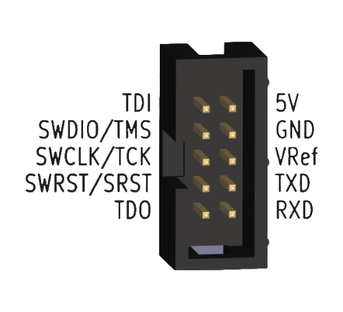

Vllink 2X 快速上手
一、对比
Vllink 2X固件与Basic 2通用Vllink 2X硬件部分做了如下优化：硬件对比
Vllink Basic 2
Vllink 2X
外壳
热缩管
塑料外壳+PVC标签
独立蓝牙天线
预留
无
2.4G Wifi天线
无
支持2.4G信道
5.8G Ipex4接口
无
支持，可手工切换
红色LED灯
有
无
USB电源输入单向二极管 (1N5817W)
无
有
DC3 5V输入理想二极管 (CH213K)
无
有
DC3 5V输出功率电子开关 (SY6280)
无
有，软件控制
DC3 5V脚TVS (SMF5.0A)
无
有
二、调试接口定义

接口 |
介绍 |
|---|---|
TDI |
JTAG数据口 |
TMS / SWDIO |
JTAG模式口、SWD数据口 |
TCK / SWCLK |
JTAG时钟口、SWD时钟口 |
SRST / SWRST |
芯片复位口 |
TDO |
JTAG数据口 |
5V |
双向5V电源口1 |
GND |
共地口 |
VRef |
参考电平及简易可调电压源2 |
TXD |
串口输出 |
RXD |
串口输入 |
[1] 5V脚支持供电双向切换，默认经理想二极管（CH213K）单向输入，支持软件开启5V输出。详见Vllink 2X 电源部分详细说明
[2] VRef默认输出3.3V，可配置为输入模式或输出其他电压。详见Vllink 2X 电源部分详细说明